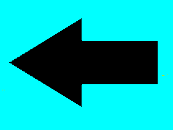

| QUINTO GRADO | |
“Tomar agua nos da vida, pero tomar conciencia nos dará agua.” - Trigo Fusión. |
~ ¡VAMOS A CULTIVAR LECHUGAS EN AGUA! ~
Este experimento te hace entender que no todas las plantas necesitan una maceta o tierra para crecer, también pueden hacerlo sólo con agua. |
| Si quieres hacer este experimento, te explicamos cómo realizarlo, sólo da clic en el botón ROJO | 
|
 |
~ VAMOS A PESCAR EN HIELO.
En el siguiente experimento el niño podrá observar el punto de equilibrio dinámico del agua y el hielo. Al momento de aplicar la pisca de sal se rompe el equilibrio. |
| Si quieres hacer este experimento, te explicamos cómo realizarlo, sólo da clic en el botón AZUL | 
|
 |
~ ¿CÓMO SE DESTRUYEN LOS GÉRMENES? ~
En esta actividad el niño observará lo que sucede al lavarse las manos y qué tan divertido puede ser. |
| Si quieres hacer este experimento, te explicamos cómo realizarlo, sólo da clic en el botón VERDE | 
|
|  |